00อ่านหน้านี้อย่างไร
หน้านี้รวมมหาสงครามและเหตุการณ์ใหญ่ที่เปลี่ยนประวัติศาสตร์ของจักรวาล Warhammer 40,000 แต่ละเหตุการณ์มีหน้าแยกที่เล่าละเอียดตั้งแต่ต้นเหตุ ลำดับการรบ ตัวละครสำคัญ จนถึงผลที่ตามมา พร้อมภาพประกอบ เรียงตามเวลาจากเก่าไปใหม่
ถ้าอ่านได้เรื่องเดียว ให้อ่าน Horus Heresy ก่อน เพราะเกือบทุกอย่างในยุค 40K เป็นผลจากสงครามนี้ แล้วค่อยต่อด้วย Cadia ล่มสลาย และ Great Rift ที่เป็นจุดเริ่มของยุคปัจจุบัน ถ้าอยากเห็นภาพรวมทั้งหมดในหน้าเดียว ดู ไทม์ไลน์ 40K
ปีในจักรวาลนี้เขียนแบบ ปี.สหัสวรรษ เช่น 014.M31 = ปีที่ 14 ของสหัสวรรษที่ 31 (ราว ค.ศ. 30,014) ดูวิธีอ่านเต็มได้ที่ อภิธานศัพท์
01ยุคโบราณ
ก่อนมนุษย์ครองกาแล็กซี

War in Heaven
วอร์ อิน เฮฟเวน — สงครามแห่งสวรรค์Necrontyr ร่วมมือกับเทพดวงดาว C'tan รบกับ Old Ones จนทั้งสองฝ่ายพังพินาศ — กำเนิดของ Necron, Aeldari, Ork และ Warp ที่เต็มไปด้วยปีศาจ
อ่านต่อ
The Fall of the Aeldari
การล่มสลายของ Aeldari — กำเนิดของ Slaaneshความลุ่มหลงของชาว Aeldari ทั้งเผ่าให้กำเนิดเทพ Slaanesh ซึ่งกลืนวิญญาณชาว Aeldari นับพันล้านและเปิด Eye of Terror — แต่ก็ทำให้พายุ Warp สงบจนจักรพรรดิเริ่ม Great Crusade ได้
อ่านต่อ02ยุค 30K
Great Crusade และ Horus Heresy (M30–M31)
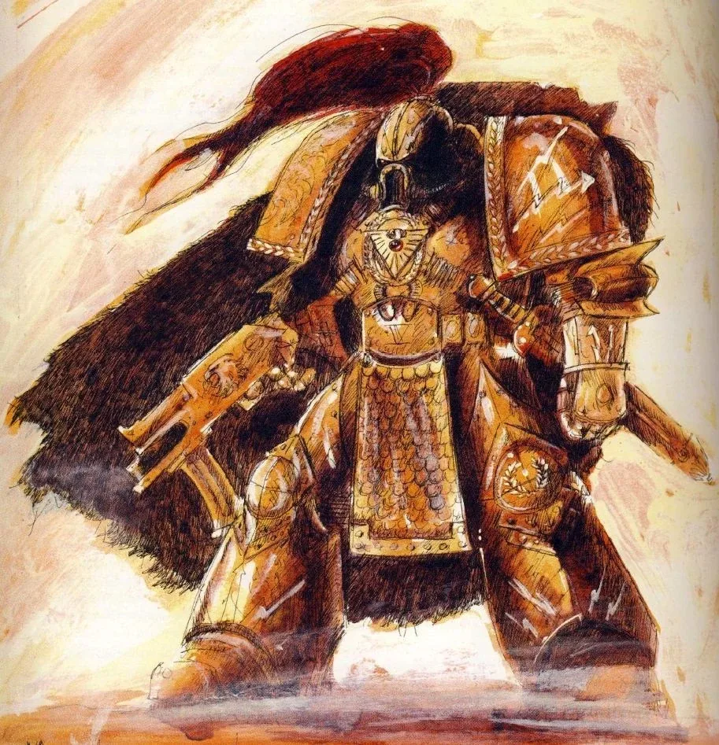
Unification Wars
ยูนิฟิเคชัน วอร์ส — สงครามรวมแผ่นดินจักรพรรดิเปิดตัวต่อชาวโลก ใช้กองทัพ Thunder Warrior ปราบขุนศึกทั่ว Terra จนรวมเป็นหนึ่ง แล้วผูกพันธมิตรกับดาวอังคาร — จุดเริ่มต้นของจักรวรรดิ
อ่านต่อ
Great Crusade
เกรท ครูเสด — มหาสงครามครูเสดจักรพรรดินำ Legion ออกรวมดาวมนุษย์ทั่วกาแล็กซี พบ Primarch ทีละคน จนชนะ Ork ที่ Ullanor แล้วมอบตำแหน่ง Warmaster ให้ Horus
อ่านต่อ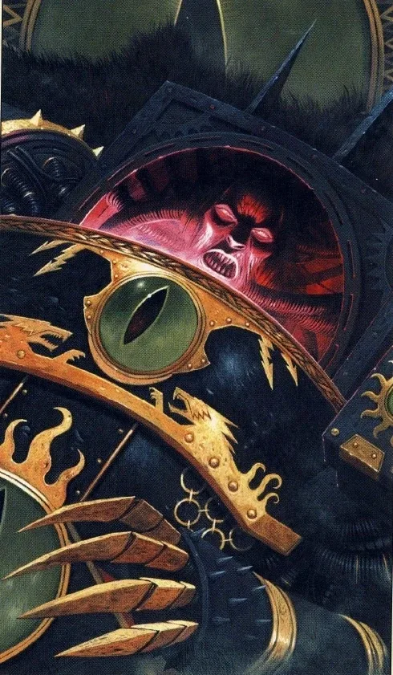
Horus Heresy
ฮอรัส เฮเรซี — สงครามกลางเมืองของจักรวรรดิHorus ถูก Chaos ล่อลวงและนำ 9 Legion กบฏต่อจักรพรรดิ สงครามเจ็ดปีจบที่ Terra — จักรพรรดิชนะแต่บาดเจ็บปางตาย และถูกผนึกบน Golden Throne
อ่านต่อ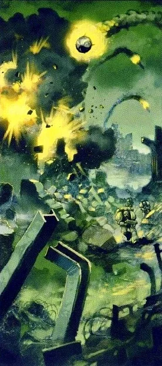
Isstvan III และ Drop Site Massacre
อิสต์วาน — สองการสังหารหมู่ที่เปิดฉาก HeresyHorus ถล่ม Isstvan III เพื่อกำจัดผู้ภักดีใน Legion ตัวเอง แล้วหักหลัง Iron Hands, Salamanders และ Raven Guard บน Isstvan V — Ferrus Manus ถูกสังหาร
อ่านต่อ
การเผา Prospero
เบิร์นนิง ออฟ พรอสเพโร — การเผาดาวแห่งนักเวทคำเตือนด้วยเวทมนตร์ของ Magnus ทำลายโครงการ Webway จักรพรรดิสั่งจับตัว แต่ Horus บิดคำสั่งให้ Space Wolves ทำลาย Prospero จน Thousand Sons ต้องหันไปหา Tzeentch
อ่านต่อ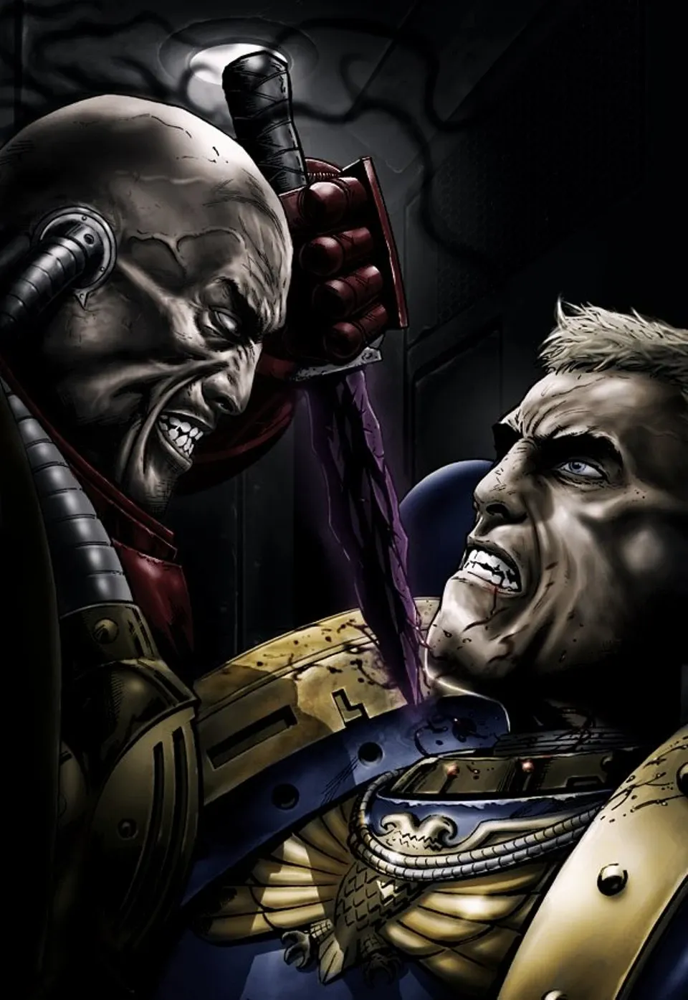
Calth และ Shadow Crusade
แคลธ — การลอบโจมตี UltramarWord Bearers ลอบโจมตี Ultramarines ระหว่างรวมพลที่ Calth แล้วบุก Ultramar พร้อม World Eaters พิธีกรรมของพวกเขาปลุก Ruinstorm ที่ผ่ากาแล็กซีเป็นสอง
อ่านต่อ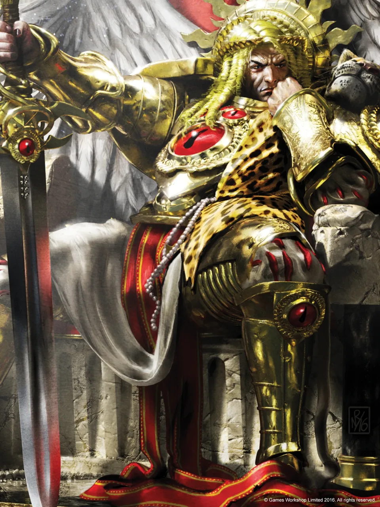
Signus, Thramas และ Imperium Secundus
สงครามฝั่งตะวันออก — จักรวรรดิที่ถูกลืมBlood Angels ติดกับดักปีศาจที่ Signus, Dark Angels ไล่ล่า Night Lords ที่ Thramas และ Guilliman ตั้งจักรวรรดิสำรองบน Macragge โดยให้ Sanguinius เป็นประมุข
อ่านต่อ
Siege of Terra
ซีจ ออฟ เทอร์รา — การปิดล้อมพระราชวังจักรพรรดิฝ่ายกบฏบุกถึงพระราชวังบน Terra จักรพรรดิขึ้นเรือของ Horus Sanguinius ถูกสังหาร Horus ถูกทำลายทั้งร่างและวิญญาณ จักรพรรดิบาดเจ็บปางตายและถูกผนึกบนบัลลังก์
อ่านต่อ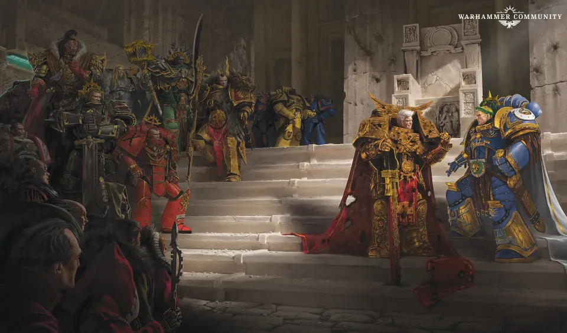
Great Scouring และ Second Founding
เกรท สเการิ่ง — การไล่ล่าหลัง Heresyฝ่ายภักดีไล่ล่า Legion ทรยศจนหนีเข้า Eye of Terror จากนั้น Guilliman ปฏิรูปจักรวรรดิ แบ่ง Legion เป็น Chapter ละพันนายตาม Codex Astartes
อ่านต่อ03หมื่นปีแห่งความมืด
หลัง Heresy ถึงสหัสวรรษที่ 40 (M31–M40)
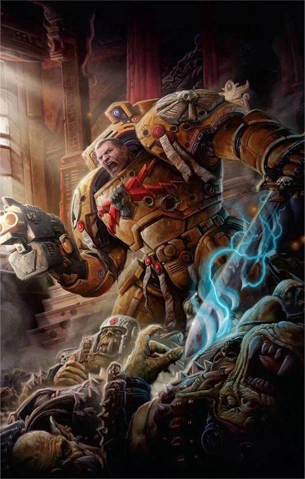
War of the Beast
วอร์ ออฟ เดอะ บีสต์ — สงคราม Ork ที่เกือบทำลาย TerraWAAAGH! ของ The Beast บุกถึงวงโคจรของ Terra Imperial Fists เกือบสูญพันธุ์ Vulkan กลับมาสู้ และสงครามนี้ให้กำเนิด Deathwatch กับ Ordo Xenos
อ่านต่อ
Age of Apostasy
เอจ ออฟ อะพอสตาซี — ยุคนอกรีตและ Reign of BloodGoge Vandire ยึดทั้งรัฐและศาสนาแล้วปกครองด้วยความหวาดกลัว จนนักเทศน์ Sebastian Thor นำการปฏิรูป และองครักษ์หญิงของ Vandire เองเป็นผู้ประหารเขา — กำเนิดของ Sisters of Battle
อ่านต่อ04สหัสวรรษที่ 41
ยุคหลักของเกม 40K
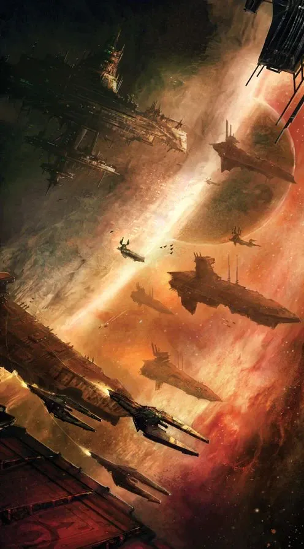
Gothic War
โกธิค วอร์ — Black Crusade ครั้งที่ 12Abaddon บุก Gothic Sector เพื่อยึด Blackstone Fortress ฐานทัพต่างดาวโบราณ ใช้ Planet Killer ระเบิดดาว จนกองทัพเรือของ Ravensburg และ Aeldari ขับไล่ได้ — แต่ Abaddon หนีไปพร้อม Fortress สองแห่ง
อ่านต่อ
Siege of Vraks
ซีจ ออฟ วรากส์ — สงครามสนามเพลาะ 17 ปีCardinal Xaphan ก่อกบฏบนดาวคลังอาวุธ Vraks Death Korps of Krieg ใช้เวลา 17 ปีและทหาร 14 ล้านนายในสงครามสนามเพลาะเพื่อยึดคืน — ได้ดาวกลับมาเพียงซากปรักหักพัง
อ่านต่อ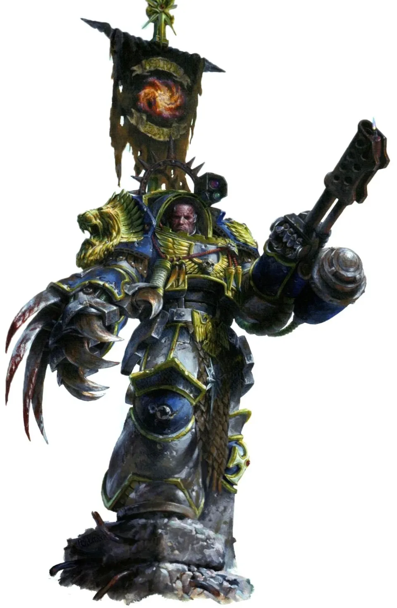
Badab War
บาแดบ วอร์ — สงครามระหว่าง Space MarineLufgt Huron ผู้นำ Astral Claws ประกาศแยกภาค Badab ออกจากจักรวรรดิ Space Marine หลาย Chapter รบกันเอง 12 ปี จนเขาหนีเข้า Maelstrom กลายเป็น Huron Blackheart ผู้นำ Red Corsairs
อ่านต่อ
Tyrannic Wars
ไทแรนนิก วอร์ส — การรุกรานของ TyranidHive Fleet Behemoth, Kraken และ Leviathan บุกกาแล็กซีทีละระลอก Ultramarines เสีย 1st Company ทั้งหมดที่ Macragge Craftworld Iyanden เกือบสูญพันธุ์ และ Inquisitor Kryptman ต้องใช้วิธีสุดโต่งเพื่อหยุดยั้ง
อ่านต่อ
สงคราม Armageddon
สงครามอาร์มาเก็ดดอน — ดาวที่ไม่เคยสงบAngron บุกครั้งแรก Ghazghkull บุกครั้งที่สองและสาม ปะทะ Commissar Yarrick คู่แค้นตลอดกาล และสงครามยังไม่จบจนถึงเนื้อเรื่อง 11th Edition
อ่านต่อ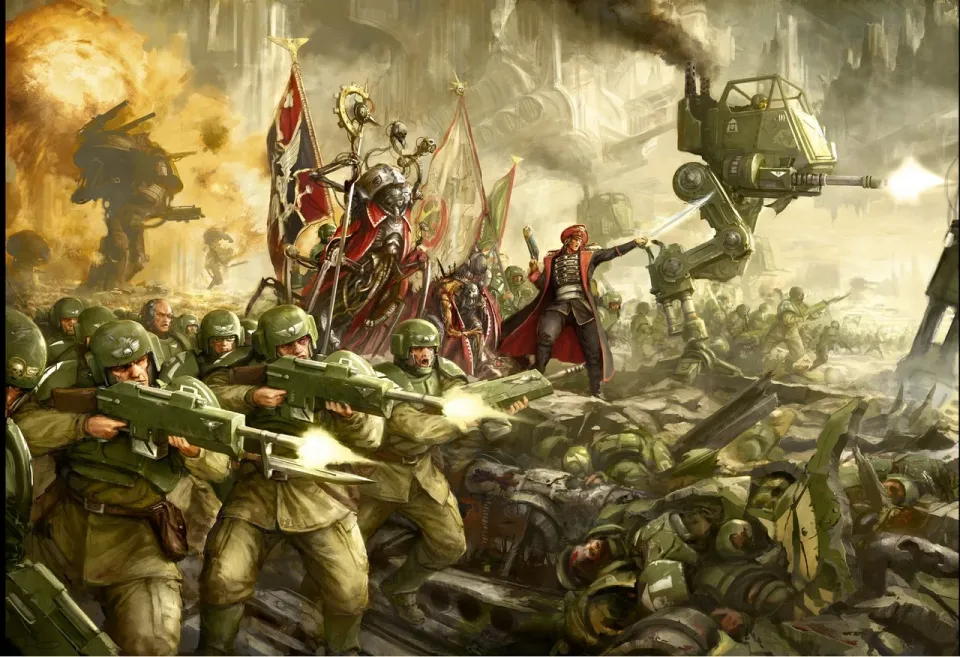
Cadia ล่มสลาย
การล่มสลายของ Cadia — Black Crusade ครั้งที่ 13Abaddon บุก Cadia ครั้งที่ 13 ฝ่ายป้องกันเกือบชนะเมื่อ Cawl ปลุกเสา Pylon แต่ Abaddon ทุ่ม Blackstone Fortress ใส่ดาว Cadia แตกสลาย และ Eye of Terror ขยายจนเกิด Great Rift
อ่านต่อ05Era Indomitus
หลัง Great Rift จนถึงปัจจุบัน (M42)
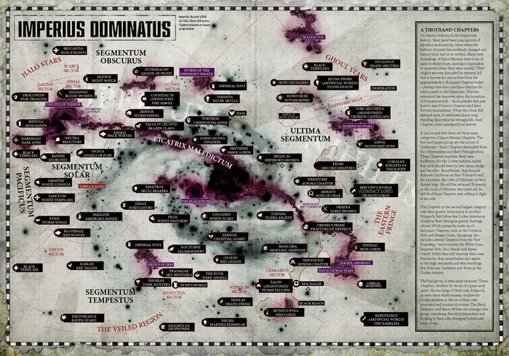
Great Rift และ Noctis Aeterna
เกรท ริฟต์ — รอยแยกที่ผ่ากาแล็กซีรอยแยก Warp ฉีกกาแล็กซีจาก Eye of Terror ถึงขอบตะวันออก แสง Astronomican ดับ (Noctis Aeterna) จักรวรรดิแตกเป็น Sanctus กับ Nihilus และ Chaos ทะลักออกมาทั่วทุกที่
อ่านต่อ
Indomitus Crusade
อินโดมิตัส ครูเสด — การกลับมาของ GuillimanGuilliman ฟื้นคืนชีพ เดินทางถึง Terra แล้วนำสงครามครูเสดครั้งใหญ่พร้อม Primaris Space Marine รุ่นใหม่ กอบกู้ Imperium Sanctus จากการล่มสลาย
อ่านต่อ
Devastation of Baal
เดวาสเตชัน ออฟ บาล — การปิดล้อมดาวบ้านเกิดของ Blood AngelsHive Fleet Leviathan ล้อมดาว Baal Blood Angels และ Chapter ในสายเลือดเดียวกันสู้จนเกือบหมด ก่อนปีศาจของ Ka'bandha และกองทัพของ Guilliman จะมาถึงพร้อมกันอย่างไม่คาดคิด
อ่านต่อ
Plague Wars
เพลก วอร์ส — สงครามโรคระบาดใน UltramarMortarion และ Death Guard บุก Ultramar ด้วยโรคระบาดของ Nurgle Guilliman กลับมาป้องกันบ้านเกิดและดวลกับพี่ชายบน Iax ก่อนฝ่าย Nurgle จะถอยไปพร้อมระเบิดไวรัสที่ฆ่าดาวทั้งดวง
อ่านต่อ